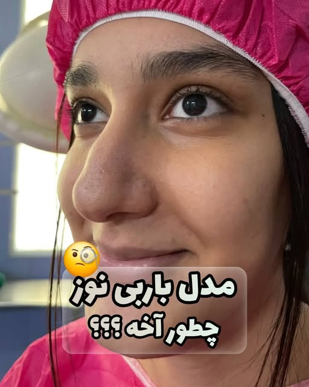

بینی گوشتی رایجترین نوع بینی در ایرانیان است؛ پوست ضخیم و غضروف ضعیف، نوک گرد و پهن و پرههای باز دارد. جراحی آن دقیقترین نوع رینوپلاستی است چون نتیجه باید همزمان با کاهش حجم، ساختاری قوی و ماندگار بسازد.
این عمل برای چه کسانی مناسب است؟
- افرادی با پوست ضخیم و چرب بینی و نوک پهن یا آویزان
- کسانی که نوک بینیشان با گذشت زمان یا خندیدن افتادگی نشان میدهد
- افرادی که در جراحی اول بینیشان بهاندازه کافی باریک نشده و نوک هنوز بزرگ است
- کسانی که پرههای باز دارند و از نمای روبرو بینیشان پهن دیده میشود
- کسی که انتظار واقعبینانه دارد و میداند پوست ضخیم، جزئیات کمتری نشان میدهد
جراحی چطور انجام میشود؟
کلید موفقیت بینی گوشتی «تقویت ساختار» است، نه صرفاً تراشیدن. مراحل اصلی:
- باریکسازی نوک: فرمدهی غضروفهای نوک و کوچککردن پرهها از داخل
- گرافتگذاری: استفاده از غضروف خود بیمار (تیغه، گوش یا دنده) برای ساخت تکیهگاه و برجستهکردن نوک — مهمترین مرحله برای جلوگیری از افتادگی آینده
- تقویت ستون نوک (Columellar Strut): پایهریزی محکم برای نوک بینی
- تراش محدود غضروفهای جانبی: با احتیاط تا پوست ضخیم بدون افتادگی روی ساختار جدید بنشیند
جراحی معمولاً ۲.۵ تا ۳.۵ ساعت طول میکشد و با بیهوشی کامل یا بیحسی موضعی با آرامبخشی انجام میشود.
دوران نقاهت چگونه است؟
- ۴۸ ساعت اول: کمپرس سرد روی گونهها (نه روی بینی)، خواب با سر بالا و مایعات فراوان
- هفته اول: استراحت نسبی؛ چسب بینی از روز ۲ تا ۳ با آموزش مطب تعویض میشود
- هفته دوم: بازگشت به کار اداری (در صورت نبود ورم زیاد) و پیادهروی سبک
- ماه اول: ۷۰٪ ورم جمع میشود اما در بینی گوشتی ورم بیشتری نسبت به استخوانی طبیعی است
- تا ماه ۱۲ تا ۱۸: فرم نهایی بهتدریج ظاهر میشود — صبر در بینی گوشتی مهمترین بخش درمان است
عوامل مؤثر بر هزینه
- میزان ضخامت پوست و حجم کار روی نوک و پرهها
- نیاز به گرافت از تیغه، گوش یا دنده (منبع گرافت بر هزینه اثر دارد)
- نوع بیهوشی و مرکز درمانی (کلینیک یا بیمارستان)
- جراحی اول یا ترمیمی بودن (ترمیمی پیچیدهتر و پرهزینهتر است)
- اقدامات همراه مانند سپتوپلاستی یا آلارپلاستی همزمان
هزینه دقیق پس از معاینه و بهصورت کتبی اعلام میشود.
سوالات پرتکرار
بله؛ به شرط گرافتگذاری و تقویت ساختار نوک. بدون گرافت، پوست ضخیم با گذر زمان نوک را پایین میکشد؛ با تکنیک ساختاری، نتیجه برای سالها پایدار میماند.
بله، ورم بینی گوشتی نسبت به استخوانی بیشتر و طولانیتر است؛ اما با تکنیکهای کمتروما (minimizing dissection) و مراقبت صحیح، قابل کنترل است.
پوست ضخیم اجازه نمایش جزئیات ریز را نمیدهد؛ فانتزی شدید در بینی خیلی گوشتی واقعبینانه نیست و معمولاً نتیجه طبیعی یا نیمهفانتزی بهترین انتخاب است. این را در جلسه مشاوره صادقانه بررسی میکنیم.
برای بینی گوشتی مشاوره بگیرید
نوع پوست و مدل مناسب شما فقط با معاینه مشخص میشود؛ هماکنون در واتساپ مطب پیام بدهید.
منبع: مطب دکتر فریبرز ملکی